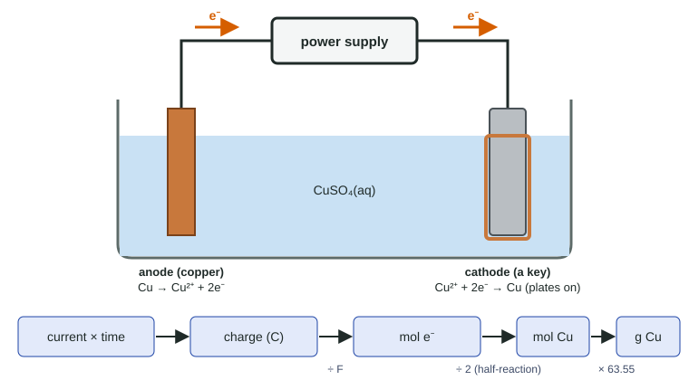

Topic 9.8 introduced the electrolytic cell: an outside power supply pushes electrons to drive a redox reaction that would not go on its own. This page is about using one, electrolysis, and about answering the question every electrolysis problem asks: how much product does a given current make in a given time?
What electrolysis does
Electrolysis is used wherever a metal or element has to be pulled out of a stable compound or laid down as a coating:
- Electroplating: coating an object with a thin layer of metal (copper, silver, chromium, gold). The object is the cathode, because the metal forms by reduction of its ions.
- Producing reactive metals: aluminum from molten Al2O3, sodium from molten NaCl. These metals are so easily oxidized that no chemical reducing agent is practical.
- Splitting water into H2 and O2, a reaction with ΔG° = +474.2 kJ/mol.

In Figure 1, the power supply pulls electrons out of the copper anode, where Cu → Cu2+ + 2e−, and pushes them into the key, where Cu2+ + 2e− → Cu. Oxidation is still at the anode and reduction at the cathode, as in every cell.
Current, charge and moles of electrons
Electric current, I, is the rate at which charge flows, measured in amperes: 1 A = 1 coulomb per second. So the charge that passes is
q = It (coulombs = amperes × seconds)
and, since one mole of electrons carries F = 96,485 C (the Faraday constant, topic 9.9),
moles of electrons = q / F
The half-reaction then turns moles of electrons into moles of product. This chain is Faraday's law: the amount of product is proportional to the charge passed.
The Faraday chain
Worked example. A key is copper-plated from CuSO4(aq) with a steady current of 2.50 A for 30.0 minutes. What mass of copper plates onto the key? (Cu = 63.55 g/mol)
1. Time in seconds: 30.0 min × 60 s/min = 1800 s.
2. Charge: q = It = (2.50 C/s)(1800 s) = 4.50 × 103 C.
3. Moles of electrons: 4.50 × 103 C × (1 mol e− / 96,485 C) = 0.04664 mol e−.
4. Moles of copper, from Cu2+ + 2e− → Cu: 0.04664 mol e− × (1 mol Cu / 2 mol e−) = 0.02332 mol Cu.
5. Mass: 0.02332 mol × 63.55 g/mol = 1.48 g Cu.
Units cancel at every step, and the answer has three significant figures, like the current and the time.
The step most often missed is step 4. One mole of electrons makes 1 mol of Ag (Ag+ + e−), but only ½ mol of Cu (Cu2+ + 2e−) and ⅓ mol of Al (Al3+ + 3e−).
Running the chain backward
To find the time or current needed for a given mass, start at the other end.
Worked example. How long does it take to plate 2.00 g of copper at 2.50 A?
2.00 g ÷ 63.55 g/mol = 0.03147 mol Cu; × 2 mol e−/mol Cu = 0.06294 mol e−; × 96,485 C/mol e− = 6073 C.
t = q/I = 6073 C ÷ 2.50 A = 2429 s = 40.5 min.
Cells in series
When cells are wired one after another, the same current flows through each, so the same moles of electrons pass through each. Different metals still form in different amounts. With 1.93 × 104 C (0.200 mol e−):
| Half-reaction | mol metal | mass |
|---|---|---|
| Ag+ + e− → Ag | 0.200 | 21.6 g |
| Cu2+ + 2e− → Cu | 0.100 | 6.36 g |
| Al3+ + 3e− → Al | 0.0667 | 1.80 g |
A mass comparison needs both the electrons per ion and the molar mass; comparing masses without the molar mass is a common slip.
When the numbers do not match
Faraday's law assumes every electron reduces the intended ion. In a real cell, some current may go into a side reaction (such as reducing water to H2 at the cathode), so less metal forms than calculated. The ratio of actual to predicted mass is the cell's current efficiency.